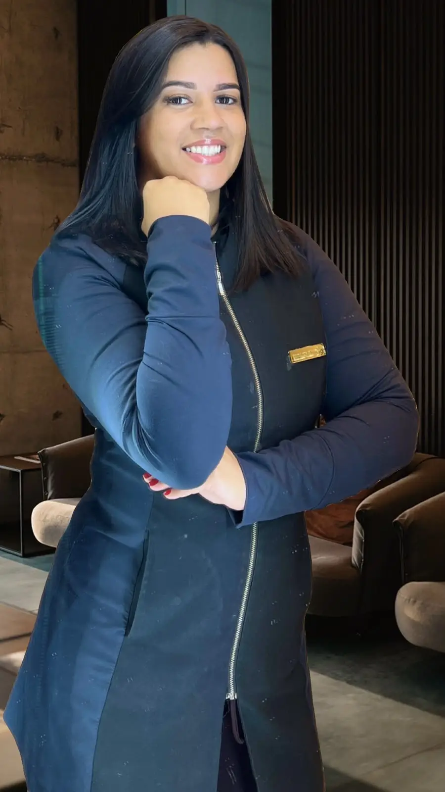
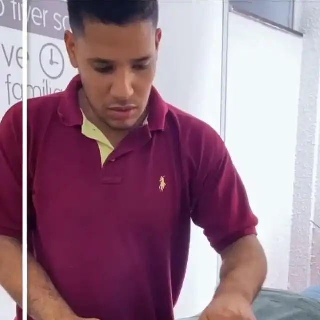
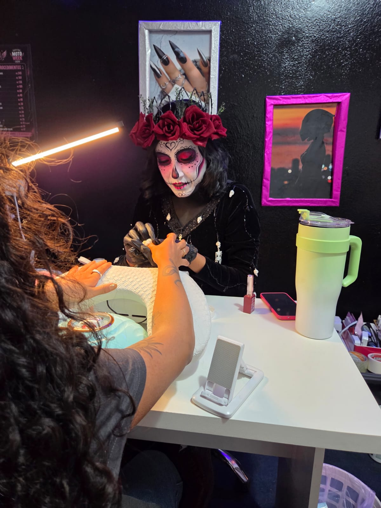
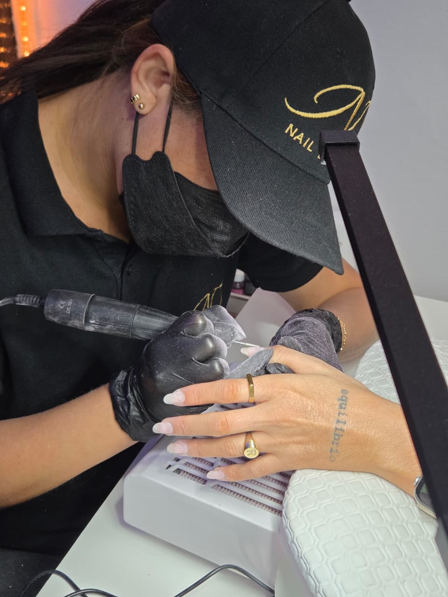
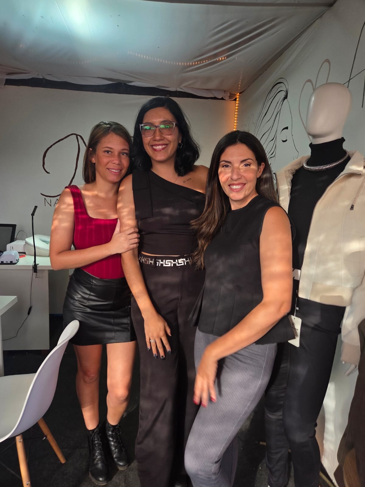
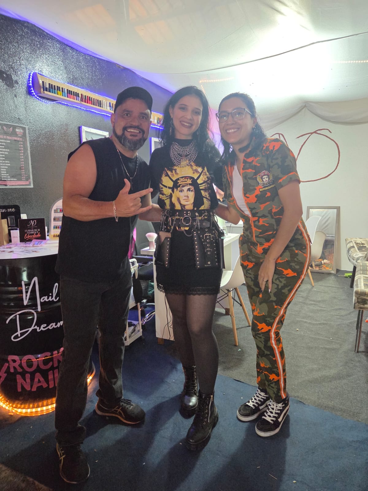
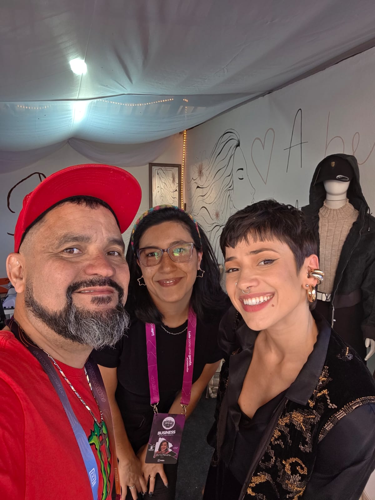
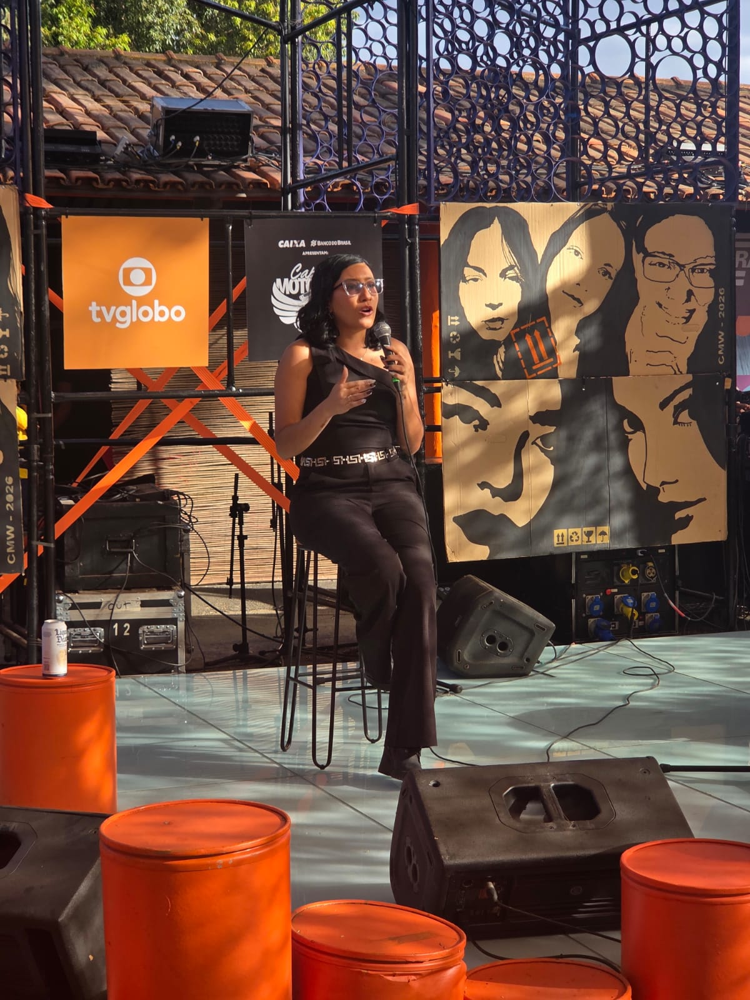

Alongamento de unhas
Comprimento, resistência e acabamento elegante para quem deseja transformar o formato das unhas.
R$ 165Especialistas em unhas de gel, com técnicas pensadas para valorizar a beleza natural das suas unhas em uma experiência premium, clássica e acolhedora.


O Studio Nail Dreams é especializado em realçar a beleza natural das unhas, localizado em Águas Claras Sul. Fundado por Celyne Pereira e Natália Ramos, nasceu com o propósito de transformar cada atendimento em uma experiência única.
Somos profissionais especializadas em unhas de gel e contamos com um ambiente aconchegante e clássico, pensado para proporcionar momentos de autocuidado, beleza e bem-estar.
Valores organizados para facilitar a escolha do procedimento ideal.
Comprimento, resistência e acabamento elegante para quem deseja transformar o formato das unhas.
R$ 165Camada de gel construtor sobre a unha natural, preservando comprimento e formato.
R$ 138Técnica com brocas diamantadas de gramatura fina para acabamento delicado e preciso.
R$ 57A experiência Nail Dreams une técnica, escuta e cuidado para entregar unhas mais bonitas, resistentes e alinhadas ao seu estilo.
Observamos o estado das unhas e entendemos o resultado desejado.
Aplicação precisa, curvatura, estrutura e acabamento com atenção aos detalhes.
Brilho, naturalidade e orientação para manter o resultado por mais tempo.
Fotos reais do trabalho da Nail Dreams, com resultados naturais, delicados e também produções mais marcantes.


Fundadora do Studio Nail Dreams e especialista em unhas de gel.
Medicina tradicional chinesa, ventosa terapia, auriculoterapia e quiropraxia.

Extensão de cílios, design de sobrancelhas e lash design.

Massoquiro
A Nail Dreams é a plataforma oficial de agendamento online do Studio Nail Dreams. Por meio da plataforma, você pode escolher seus serviços de beleza e bem-estar, profissionais, data e horário de atendimento de forma simples e segura.
Entre com sua conta para consultar as opções disponíveis e agendar seu atendimento.Acesso seguro para iniciar seu agendamento.
Escolha do procedimento, especialista e preferência de atendimento.
Agenda calculada por duração do serviço, bloqueios e disponibilidade.
Revise os dados e envie sua solicitação pelo sistema.
Uma experiência que marcou nossa história. Durante o evento, a Nail Dreams levou beleza, atitude e unhas impecáveis para mulheres que vivem o movimento com estilo, personalidade e autocuidado.






Espaço Lady Bikers · Capital Moto Week 2026
Agende seu horário pelo WhatsApp ou visite nosso perfil para acompanhar resultados, novidades e bastidores do studio.
Rua 25 Sul, Lote 30, Bloco B, Loja 107 — Condomínio ParkStyle,